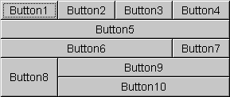
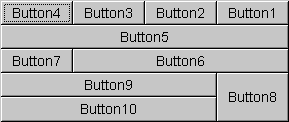

- java.lang.Object
-
- java.awt.GridBagLayout
-
- All Implemented Interfaces:
-
LayoutManager，LayoutManager2，Serializable
public class GridBagLayout extends Object implements LayoutManager2, Serializable
GridBagLayout类是一种灵活的布局管理器，可以垂直，水平或沿其基准对齐组件，而不需要组件的大小相同。 每个GridBagLayout对象维护一个动态的，矩形的单元格网格，每个组件占据一个或多个单元格，称为其显示区域 。由
GridBagLayout管理的每个组件与一个GridBagConstraints的实例相关联。 constraints对象指定组件的显示区域在网格上的位置以及组件在其显示区域内的位置。 除了其约束对象外，GridBagLayout还考虑每个组件的最小和首选大小，以确定组件的大小。电网的整体方向取决于集装箱的
ComponentOrientation属性。 对于水平从左到右的方向，网格坐标（0,0）位于容器的左上角，其中x向右增加，y向下增加。 对于水平从右到左的方向，网格坐标（0,0）位于容器的右上角，其中x向左增加，y向下增加。为了有效使用网格包布局，必须定制一个或多个
GridBagConstraints了与它的组件相关联的对象。 您可以通过设置一个或多个实例变量来自定义一个GridBagConstraints对象：-
GridBagConstraints.gridx，GridBagConstraints.gridy -
指定包含组件显示区域的前角的单元格，其中网格原点的单元格地址
gridx = 0gridy = 0。 对于水平从左到右的布局，组件的前角是其左上角。 对于水平从右到左的布局，组件的前角是其右上角。 使用GridBagConstraints.RELATIVE（默认值）来指定在添加该组件之前添加到容器中的组件，立即将组件放置在（沿x轴为gridx或y轴为gridy）之后。 -
GridBagConstraints.gridwidth，GridBagConstraints.gridheight -
指定组件显示区域中一行中的单元格数（
gridwidth）或列（gridheight）。 默认值为1.使用GridBagConstraints.REMAINDER指定组件的显示区域将从gridx到行中的最后一个单元格（gridwidth）或从gridy到列的最后一个单元格（gridheight）。 使用GridBagConstraints.RELATIVE指定组件的显示区域将从gridx到其行中最后一个单元格的下一个（gridwidth或从gridy到其列中最后一个单元格的gridheight）（gridheight）。 -
GridBagConstraints.fill -
当组件的显示区域大于组件的请求大小时使用，以确定是否（以及如何）调整组件的大小。
可能的值为
GridBagConstraints.NONE（默认值），GridBagConstraints.HORIZONTAL（使组件宽度足以水平填充其显示区域，但不要更改其高度），GridBagConstraints.VERTICAL（使组件足够高以垂直填充其显示区域，但不要更改其宽度）和GridBagConstraints.BOTH（使组件完全填充其显示区域）。 -
GridBagConstraints.ipadx，GridBagConstraints.ipady -
在布局中指定组件的内部填充，添加到组件的最小大小的多少。
组件的宽度至少为其最小宽度加上
ipadx像素。 类似地，组件的高度将至少为最小高度加上ipady像素。 -
GridBagConstraints.insets - 指定组件的外部填充，组件与其显示区域边缘之间的最小空间量。
-
GridBagConstraints.anchor -
指定组件在其显示区域中的位置。
有三种可能的值：绝对值，方向相对值和基线相对方向相对值相对于容器的
ComponentOrientation属性进行解释，绝对值不是。 基线相对值相对于基线计算。 有效值为： Absolute, relative and baseline values as described aboveAbsolute Values
Orientation Relative Values
Baseline Relative Values
GridBagConstraints.NORTHGridBagConstraints.SOUTHGridBagConstraints.WESTGridBagConstraints.EASTGridBagConstraints.NORTHWESTGridBagConstraints.NORTHEASTGridBagConstraints.SOUTHWESTGridBagConstraints.SOUTHEASTGridBagConstraints.CENTER(the default)
GridBagConstraints.PAGE_STARTGridBagConstraints.PAGE_ENDGridBagConstraints.LINE_STARTGridBagConstraints.LINE_ENDGridBagConstraints.FIRST_LINE_STARTGridBagConstraints.FIRST_LINE_ENDGridBagConstraints.LAST_LINE_STARTGridBagConstraints.LAST_LINE_END
GridBagConstraints.BASELINEGridBagConstraints.BASELINE_LEADINGGridBagConstraints.BASELINE_TRAILINGGridBagConstraints.ABOVE_BASELINEGridBagConstraints.ABOVE_BASELINE_LEADINGGridBagConstraints.ABOVE_BASELINE_TRAILINGGridBagConstraints.BELOW_BASELINEGridBagConstraints.BELOW_BASELINE_LEADINGGridBagConstraints.BELOW_BASELINE_TRAILING
-
GridBagConstraints.weightx，GridBagConstraints.weighty -
用于确定如何分配空间，这对于指定调整大小的行为很重要。
除非您指定一行中至少一个组件（
weightx）和列（weighty）的权重，否则所有组件都将集中在其容器的中心。 这是因为当重量为零（默认值）时，GridBagLayout对象在其单元格格栅和容器边缘之间放置任何额外的空格。
每行可能有一个基线; 基线是由该行中具有有效基线和沿基线对齐（该组件的锚定值中的一个的分量确定
BASELINE，BASELINE_LEADING或BASELINE_TRAILING）。 如果行中没有一个组件具有有效的基线，则该行不具有基线。如果组件跨越行，则它将与起始行的基线对齐（如果baseline-resize行为为
CONSTANT_ASCENT）或结束行（如果baseline-resize行为为CONSTANT_DESCENT）。 组件对齐的行称为主要行 。下图显示了基线布局，并包括跨越行的组件：
Baseline Layout
此布局由三个组件组成：- 一个从第0行开始并以行1结尾的面板。面板的基线调整大小为
CONSTANT_DESCENT，锚点为BASELINE。 由于基准调整大小的行为为CONSTANT_DESCENT，面板的主要行为第1行。 - 两个按钮，每个按钮的基线调整大小为
CENTER_OFFSET，锚点为BASELINE。
使用其中一个基线相对值定位的组件的大小与使用绝对值或方向相对值定位时的大小不同。 组件变化的方式由当前行的基线如何变化决定。 如果具有相同主行的任何组件的基线调整大小行为为
CONSTANT_DESCENT，则基线将锚定到显示区域的CONSTANT_DESCENT，否则基线将锚定到显示区域的顶部。 以下规则规定了调整大小的行为：- 位于基线以上的可调整大小的组件只能增长到基线的高度。 例如，如果基线为100并且位于顶部，则位于基线之上的可调整大小的组件永远不会增长超过100个单位。
- 类似地，位于基线以下的可调整大小的组件只能增长到显示高度和基线之间的差。
- 如果基准调整大小的行为为
OTHER，则位于基准OTHER的可调整大小的OTHER仅在调整大小的基线适合显示区域时才调整大小。 如果基准使得它不适合显示区域，则组件不会调整大小。 - 位于基准线上的基准调整大小行为
OTHER只能高达display height - baseline + baseline of component。
以下图显示了由网格包布局管理的十个组件（所有按钮）。 图2显示了一个水平的从左到右的容器的布局，图3显示了一个水平的，从右到左的容器的布局。
Figures   Figure 2: Horizontal, Left-to-Right Figure 3: Horizontal, Right-to-Left十个组件中的每一个都有其相关联的
GridBagConstraints对象的fill字段设置为GridBagConstraints.BOTH。 此外，组件具有以下非默认约束：-
weightx = 1.0：weightx = 1.0 - 将Button4：
weightx = 1.0，gridwidth = GridBagConstraints.REMAINDER - Button5：
gridwidth = GridBagConstraints.REMAINDER - Button6：
gridwidth = GridBagConstraints.RELATIVE - Button7：
gridwidth = GridBagConstraints.REMAINDER - 按钮8：
gridheight = 2，weighty = 1.0 - 按钮9，按钮10：
gridwidth = GridBagConstraints.REMAINDER
以下是实现上述示例的代码：
import java.awt.*; import java.util.*; import java.applet.Applet; public class GridBagEx1 extends Applet { protected void makebutton(String name, GridBagLayout gridbag, GridBagConstraints c) { Button button = new Button(name); gridbag.setConstraints(button, c); add(button); } public void init() { GridBagLayout gridbag = new GridBagLayout(); GridBagConstraints c = new GridBagConstraints(); setFont(new Font("SansSerif", Font.PLAIN, 14)); setLayout(gridbag); c.fill = GridBagConstraints.BOTH; c.weightx = 1.0; makebutton("Button1", gridbag, c); makebutton("Button2", gridbag, c); makebutton("Button3", gridbag, c); c.gridwidth = GridBagConstraints.REMAINDER; //end row makebutton("Button4", gridbag, c); c.weightx = 0.0; //reset to the default makebutton("Button5", gridbag, c); //another row c.gridwidth = GridBagConstraints.RELATIVE; //next-to-last in row makebutton("Button6", gridbag, c); c.gridwidth = GridBagConstraints.REMAINDER; //end row makebutton("Button7", gridbag, c); c.gridwidth = 1; //reset to the default c.gridheight = 2; c.weighty = 1.0; makebutton("Button8", gridbag, c); c.weighty = 0.0; //reset to the default c.gridwidth = GridBagConstraints.REMAINDER; //end row c.gridheight = 1; //reset to the default makebutton("Button9", gridbag, c); makebutton("Button10", gridbag, c); setSize(300, 100); } public static void main(String args[]) { Frame f = new Frame("GridBag Layout Example"); GridBagEx1 ex1 = new GridBagEx1(); ex1.init(); f.add("Center", ex1); f.pack(); f.setSize(f.getPreferredSize()); f.show(); } }
- 从以下版本开始：
- 1.0
- 另请参见：
-
GridBagConstraints，GridBagLayoutInfo，ComponentOrientation， Serialized Form
-
-
Field Summary
Fields Modifier and Type Field 描述 double[]columnWeights此字段保留对列权重的覆盖。int[]columnWidths此字段将覆盖列的最小宽度。protected Hashtable<Component,GridBagConstraints>comptable这个散列表维护了一个组件与其gridbag约束之间的关联。protected GridBagConstraintsdefaultConstraints该字段包含包含默认值的网格包约束实例，因此如果组件没有与其相关联的网格包约束，则该组件将被分配一份defaultConstraints的副本。protected GridBagLayoutInfolayoutInfo该字段保存网格包的布局信息。protected static intMAXGRIDSIZE此字段不再用于保留阵列并保留向后兼容性。protected static intMINSIZE可以通过网格布局布局的最小网格。protected static intPREFERREDSIZE可以通过网格布局布局的首选网格尺寸。int[]rowHeights此字段将覆盖行的最小高度。double[]rowWeights此字段保留对行权重的覆盖。
-
构造方法摘要
构造方法 Constructor 描述 GridBagLayout()创建网格包布局管理器。
-
方法摘要
所有方法 接口方法 具体的方法 Modifier and Type 方法 描述 voidaddLayoutComponent(Component comp, Object constraints)使用指定的constraints对象将指定的组件添加到布局。voidaddLayoutComponent(String name, Component comp)没有效果，因为此布局管理器不使用每个组件字符串。protected voidadjustForGravity(GridBagConstraints constraints, Rectangle r)根据约束几何和焊盘，将x，y，width和height字段调整为正确的值。protected voidAdjustForGravity(GridBagConstraints constraints, Rectangle r)根据约束几何和焊盘，将x，y，width和height字段调整为正确的值。protected voidarrangeGrid(Container parent)排出电网。protected voidArrangeGrid(Container parent)此方法已过时，仅供后向兼容; 新代码应该调用arrangeGrid。GridBagConstraintsgetConstraints(Component comp)获取指定组件的约束。floatgetLayoutAlignmentX(Container parent)返回沿x轴的对齐方式。floatgetLayoutAlignmentY(Container parent)返回沿着y轴的对齐。int[][]getLayoutDimensions()确定布局网格的列宽和行高。protected GridBagLayoutInfogetLayoutInfo(Container parent, int sizeflag)针对当前管理的儿童组GridBagLayoutInfo的例子。protected GridBagLayoutInfoGetLayoutInfo(Container parent, int sizeflag)此方法已过时，仅供后向兼容; 新代码应该调用getLayoutInfo。PointgetLayoutOrigin()确定目标容器的图形坐标空间中的布局区域的原点。double[][]getLayoutWeights()确定布局网格的列和行的权重。protected DimensiongetMinSize(Container parent, GridBagLayoutInfo info)根据getLayoutInfo的信息，getLayoutInfo主站的最小尺寸。protected DimensionGetMinSize(Container parent, GridBagLayoutInfo info)此方法已过时，仅供后向兼容; 新代码应该调用getMinSize。voidinvalidateLayout(Container target)使布局无效，指示如果布局管理器已缓存信息，则应将其丢弃。voidlayoutContainer(Container parent)使用此网格包布局来放出指定的容器。Pointlocation(int x, int y)确定布局网格中的单元格包含由(x, y)指定的点。protected GridBagConstraintslookupConstraints(Component comp)检索指定组件的约束。DimensionmaximumLayoutSize(Container target)给定指定目标容器中的组件的返回布局的最大尺寸。DimensionminimumLayoutSize(Container parent)使用此网格包布局确定parent容器的最小尺寸。DimensionpreferredLayoutSize(Container parent)使用此网格袋布局确定parent容器的首选尺寸。voidremoveLayoutComponent(Component comp)从此布局中删除指定的组件。voidsetConstraints(Component comp, GridBagConstraints constraints)设置此布局中指定组件的约束。StringtoString()返回此网格包布局值的字符串表示形式。
-
-
-
字段详细信息
-
MAXGRIDSIZE
protected static final int MAXGRIDSIZE
此字段不再用于保留阵列并保留向后兼容性。 以前，这是网格布局布局的网格位置（水平和垂直）的最大数量。 当前的实施不会对网格的大小施加任何限制。- 另请参见：
- Constant Field Values
-
MINSIZE
protected static final int MINSIZE
可以通过网格布局布局的最小网格。- 另请参见：
- Constant Field Values
-
PREFERREDSIZE
protected static final int PREFERREDSIZE
可以通过网格布局布局的首选网格尺寸。- 另请参见：
- Constant Field Values
-
comptable
protected Hashtable<Component,GridBagConstraints> comptable
这个散列表维护了一个组件与其gridbag约束之间的关联。comptable中的键是组件，值是GridBagConstraints的实例。- 另请参见：
-
GridBagConstraints
-
defaultConstraints
protected GridBagConstraints defaultConstraints
此字段包含包含默认值的gridbag约束实例，因此如果组件没有与其相关联的defaultConstraints约束，则将为该组件分配defaultConstraints的副本。
-
layoutInfo
protected GridBagLayoutInfo layoutInfo
该字段保存网格包的布局信息。 该字段中的信息是基于最近验证的网格包。 如果layoutInfo为null，则表示null中没有组件，或者有组件，尚未验证。
-
columnWidths
public int[] columnWidths
此字段将覆盖列的最小宽度。 如果此字段不是null，则在计算所有最小列宽度之后，将值应用于网格包。 如果columnWidths具有比列数更多的元素，列将添加到gridbag中以匹配columnWidth中的元素数。- 另请参见：
-
getLayoutDimensions()
-
rowHeights
public int[] rowHeights
此字段将覆盖行的最小高度。 如果此字段不是null，则在计算所有最小行高后，将其应用于网格包。 如果rowHeights具有比行数更多的元素，则将行添加到rowHeights以匹配rowHeights的元素rowHeights。- 另请参见：
-
getLayoutDimensions()
-
columnWeights
public double[] columnWeights
此字段保留对列权重的覆盖。 如果此字段不是null，则在计算所有列权重之后，将值应用于网格包。 如果列i的重量为columnWeights[i] >，则列i的重量分配在columnWeights[i]。 如果columnWeights具有比列数更多的元素，则会忽略多余的元素 - 它们不会导致创建更多的列。
-
rowWeights
public double[] rowWeights
此字段保留对行权重的覆盖。 如果此字段不是null，则在计算所有行权重之后，将值应用于网格包。 如果行i的重量为rowWeights[i] >，那么行i的重量分配在rowWeights[i]。 如果rowWeights具有比行数更多的元素，则忽略多余的元素 - 它们不会导致创建更多的行。
-
-
方法详细信息
-
setConstraints
public void setConstraints(Component comp, GridBagConstraints constraints)
设置此布局中指定组件的约束。- 参数
-
comp- 要修改的组件 -
constraints- 要应用的约束
-
getConstraints
public GridBagConstraints getConstraints(Component comp)
获取指定组件的约束。 返回实际的GridBagConstraints对象的副本。- 参数
-
comp- 要查询的组件 - 结果
- 该网格包布局中指定组件的约束; 返回实际约束对象的副本
-
lookupConstraints
protected GridBagConstraints lookupConstraints(Component comp)
检索指定组件的约束。 返回值不是副本，而是布局机制使用的实际对象GridBagConstraints对象。如果
comp不在GridBagLayout，则返回一组默认值GridBagConstraints。 Acomp值null无效，返回null。- 参数
-
comp- 要查询的组件 - 结果
- 指定组件的约束
-
getLayoutOrigin
public Point getLayoutOrigin()
确定目标容器的图形坐标空间中的布局区域的原点。 该值表示布局区域左上角的像素坐标，而不考虑容器的ComponentOrientation值。 这与由单元格坐标（0,0）给出的网格原点不同。 大多数应用程序不直接调用此方法。- 结果
- 布局网格左上角的单元格的图形原点
- 从以下版本开始：
- 1.1
- 另请参见：
-
ComponentOrientation
-
getLayoutDimensions
public int[][] getLayoutDimensions()
确定布局网格的列宽和行高。大多数应用程序不直接调用此方法。
- 结果
- 两个数组的数组，包含布局列的宽度和布局行的高度
- 从以下版本开始：
- 1.1
-
getLayoutWeights
public double[][] getLayoutWeights()
确定布局网格的列和行的权重。 如果布局有额外的空间，重量用于计算给定列或列延伸超出其首选尺寸的数量。大多数应用程序不直接调用此方法。
- 结果
- 两个数组的数组，表示布局列的横向权重和布局行的垂直权重
- 从以下版本开始：
- 1.1
-
location
public Point location(int x, int y)
确定布局网格中的单元格包含由(x, y)指定的点。 每个单元格通过其列索引（范围从0到列数减1）和其行索引（范围从0到行数减1）来标识。如果
(x, y)点位于网格外，则使用以下规则。 如果x位于左至右容器布局的左侧或右至左容器布局右侧，则列索引返回为零。 列索引作为列数返回，如果x位于左右容器中的布局右侧或右至左容器中的左侧。 如果y位于布局上方，则行索引为零，并且如果y位于布局下方，则行索引返回为零。 容器的方向由其ComponentOrientation属性确定。- 参数
-
x- 一个点的 x坐标 -
y- 点的 y坐标 - 结果
- 指示布局网格中的单元格包含点（ x ， y ）的有序索引对。
- 从以下版本开始：
- 1.1
- 另请参见：
-
ComponentOrientation
-
addLayoutComponent
public void addLayoutComponent(String name, Component comp)
没有效果，因为此布局管理器不使用每个组件字符串。- Specified by:
-
addLayoutComponent在接口LayoutManager - 参数
-
name- 要与组件关联的字符串 -
comp- 要添加的组件
-
addLayoutComponent
public void addLayoutComponent(Component comp, Object constraints)
使用指定的constraints对象将指定的组件添加到布局。 请注意，约束是可变的，因此在缓存时被克隆。- Specified by:
-
addLayoutComponent在接口LayoutManager2 - 参数
-
comp- 要添加的组件 -
constraints- 确定组件如何添加到布局的对象 - 异常
-
IllegalArgumentException- 如果constraints不是GridBagConstraint
-
removeLayoutComponent
public void removeLayoutComponent(Component comp)
从此布局中删除指定的组件。大多数应用程序不直接调用此方法。
- Specified by:
-
removeLayoutComponent在接口LayoutManager - 参数
-
comp- 要移除的组件。 - 另请参见：
-
Container.remove(java.awt.Component)，Container.removeAll()
-
preferredLayoutSize
public Dimension preferredLayoutSize(Container parent)
使用此网格包布局确定parent容器的首选大小。大多数应用程序不直接调用此方法。
- Specified by:
-
preferredLayoutSize在接口LayoutManager - 参数
-
parent- 进行布局的容器 - 结果
-
parent容器的首选尺寸 - 另请参见：
-
Container.getPreferredSize()
-
minimumLayoutSize
public Dimension minimumLayoutSize(Container parent)
使用此网格包布局确定parent容器的最小尺寸。大多数应用程序不直接调用此方法。
- Specified by:
-
minimumLayoutSize在接口LayoutManager - 参数
-
parent- 进行布局的容器 - 结果
-
parent容器的最小尺寸 - 另请参见：
-
Container.doLayout()
-
maximumLayoutSize
public Dimension maximumLayoutSize(Container target)
给定指定目标容器中的组件的返回布局的最大尺寸。- Specified by:
-
maximumLayoutSize在接口LayoutManager2 - 参数
-
target- 需要布置的容器 - 结果
- 此布局的最大尺寸
- 另请参见：
-
Container，minimumLayoutSize(Container)，preferredLayoutSize(Container)
-
getLayoutAlignmentX
public float getLayoutAlignmentX(Container parent)
返回沿x轴的对齐方式。 这指定了组件如何相对于其他组件进行对齐。 该值应为0到1之间的数字，其中0表示原点对齐，1对齐最远离原点，0.5为中心等。- Specified by:
-
getLayoutAlignmentX接口LayoutManager2 - 参数
-
parent- 目标容器 - 结果
-
值
0.5f表示居中
-
getLayoutAlignmentY
public float getLayoutAlignmentY(Container parent)
返回沿着y轴的对齐。 这指定了组件如何相对于其他组件进行对齐。 该值应为0到1之间的数字，其中0表示原点对齐，1对齐最远离原点，0.5为中心等。- Specified by:
-
getLayoutAlignmentY在接口LayoutManager2 - 参数
-
parent- 目标容器 - 结果
-
值
0.5f表示居中
-
invalidateLayout
public void invalidateLayout(Container target)
使布局无效，指示如果布局管理器已缓存信息，则应将其丢弃。- Specified by:
-
invalidateLayout在接口LayoutManager2 - 参数
-
target- 目标容器
-
layoutContainer
public void layoutContainer(Container parent)
使用此网格包布局来放出指定的容器。 此方法会重塑为了满足这种的约束在指定的容器组件GridBagLayout对象。大多数应用程序不直接调用此方法。
- Specified by:
-
layoutContainer在接口LayoutManager - 参数
-
parent- 要进行布局的容器 - 另请参见：
-
Container，Container.doLayout()
-
getLayoutInfo
protected GridBagLayoutInfo getLayoutInfo(Container parent, int sizeflag)
针对当前管理的儿童集GridBagLayoutInfo一个GridBagLayoutInfo的例子。 这需要通过一组孩子三次：- 找出布局网格的尺寸。
- 确定组件占用的单元格。
- 在行/列之间分配权重和最小大小。
这种方法只能在内部使用
GridBagLayout。- 参数
-
parent- 布局容器 -
sizeflag-PREFERREDSIZE或MINSIZE - 结果
-
GridBagLayoutInfo为一套儿童 - 从以下版本开始：
- 1.4
-
GetLayoutInfo
protected GridBagLayoutInfo GetLayoutInfo(Container parent, int sizeflag)
此方法已过时，仅供后向兼容; 新代码应该调用getLayoutInfo。 针对当前管理的儿童组GridBagLayoutInfo的实例。 此方法与getLayoutInfo相同; 详见getLayoutInfo说明。- 参数
-
parent- 布局容器 -
sizeflag-PREFERREDSIZE或MINSIZE - 结果
-
该
GridBagLayoutInfo的孩子
-
adjustForGravity
protected void adjustForGravity(GridBagConstraints constraints, Rectangle r)
根据约束几何和焊盘，将x，y，width和height字段调整为正确的值。 该方法只能由内部使用GridBagLayout。- 参数
-
constraints- 要应用的约束 -
r- 要调整的Rectangle - 从以下版本开始：
- 1.4
-
AdjustForGravity
protected void AdjustForGravity(GridBagConstraints constraints, Rectangle r)
根据约束几何和焊盘，将x，y，width和height字段调整为正确的值。此方法已过时，仅供后向兼容; 新代码应该调用
adjustForGravity。 此方法与adjustForGravity相同- 参数
-
constraints- 要应用的约束 -
r- 要调整的Rectangle
-
getMinSize
protected Dimension getMinSize(Container parent, GridBagLayoutInfo info)
根据getLayoutInfo的信息，getLayoutInfo主站的最小尺寸。 该方法只能由内部使用GridBagLayout。- 参数
-
parent- 布局容器 -
info- 这个父母的布局信息 - 结果
-
一个包含最小尺寸的
Dimension对象 - 从以下版本开始：
- 1.4
-
GetMinSize
protected Dimension GetMinSize(Container parent, GridBagLayoutInfo info)
- 参数
-
parent- 布局容器 -
info- 这个父母的布局信息 - 结果
-
一个
Dimension对象包含最小大小
-
arrangeGrid
protected void arrangeGrid(Container parent)
排出电网。 这种方法只能在内部使用GridBagLayout。- 参数
-
parent- 布局容器 - 从以下版本开始：
- 1.4
-
ArrangeGrid
protected void ArrangeGrid(Container parent)
- 参数
-
parent- 布局容器
-
-